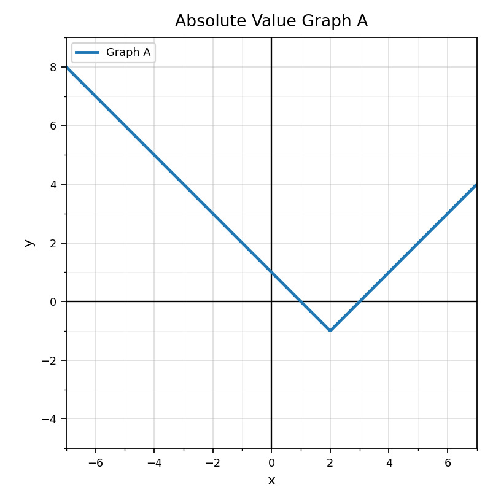
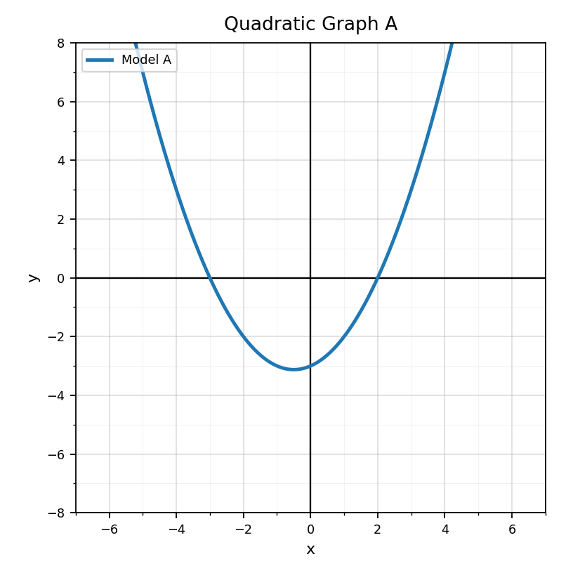

Practice Set 8.3.1
Spiral Plan and DoK Balance
Unit 8.3: Absolute Value Functions and Piecewise Thinking
4 current questions, mostly DoK 1-2
Unit 7.3: Graphing and Analyzing Exponential Functions
8 questions: 4 DoK 1, 2 DoK 2, 1 DoK 3, 1 DoK 4
Unit 6.3: Quadratic Formula
4 questions, mostly DoK 1-2
Practice Set 1: This is a section-aligned spiral: 8.3 with 7.3 and 6.3. It is not a previous-section spiral.
Use the graph. Identify the vertex and state whether the function has a minimum or maximum.

Which equation represents an absolute value function?
- $y=2x+3$
- $y=x^2-1$
- $y=|x-4|+2$
- $y=3(2^x)$
In $|x-5|$, what value is the distance measured from? Explain what the expression means in words.
A machine part must be within $3$ units of a target size of $10$. Write an absolute value inequality to represent acceptable sizes.
Use Graph A. Is the output increasing or decreasing as $x$ increases?

Use the graph. Is this exponential growth or exponential decay?

For $f(x)=4(2)^x$, find $f(0)$.
For $g(x)=64(0.5)^x$, find $g(1)$.
Use the graph to create a table with at least four approximate ordered pairs.
Describe how the graph of $y=3(2)^x$ changes as $x$ increases.
Compare Relationship A and Relationship B. How are their long-term behaviors different?

Create one exponential growth equation and one exponential decay equation. Explain how their graphs would look different.
For $2x^2-5x+3=0$, identify $a$, $b$, and $c$.
Write the discriminant expression for $ax^2+bx+c=0$.
Use the graph to predict whether the quadratic has zero, one, or two real solutions. Explain what you see.

Set up the quadratic formula for $x^2+4x-12=0$ before simplifying.